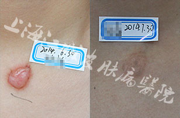
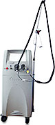

- 治疗前治疗后
- 治疗前治疗后
- 治疗前治疗后
- 治疗前治疗后
- 治疗前治疗后
- 治疗前治疗后
-
祛除疤痕疙瘩 科学诊断是前提
疤痕疙瘩分为原发型和继发型两大类,疤痕组织会因环境而不断更新, “MD皮肤超声影像诊断系统（国家 “十二五”科技支撑计划课题）”通过对疤痕皮下纤维组织，胶原蛋白等医学检测，判断疤痕体质的存在，检测疤痕疙瘩类型和程度。
-
中医内调 改善疤痕体质预防反复
数位顶级老专家多年临床经验和研究，研发的中药内调专方改善疤痕体质抑制疤痕细胞的增生、减少疤痕的色素沉着，防止反复。（详情）
-
祛除瘢痕疙瘩的心路历程
2015年1月12日，王霞从苏州来到上海江城皮肤病医院就诊。见到她的时候，发现她肩膀的疤痕疙瘩较为严重，就因是刚刚开始增生时没有重视，加上患者属于疤痕体质，导致疤痕有开始黄豆大小成了蘑菇状。王霞讲她用过很多方法，不但没有效果……（详情）
-
祛除疤痕再也不怕露肩膀
“妈妈背后有一片很大的疤痕，后来我知道是疤痕疙瘩，之前疤痕不是很大，可就在肩膀到背部这里，看着特别的恐怖，妈妈说每次洗澡看到这个疤，就觉得自己年纪大了，身体也差了。”那一片疤痕却在他们一家里的心里挥之不去，不能平复……（详情）
-
脱”去手臂上难看的疤痕疙瘩
于先生手臂有一片明显的疤痕疙瘩，呈暗红色，形状怪异，有密集恐惧症的人见到会觉得难以接受。起初于先生并不把他当回事，但渐渐地，越来越多的人向他投来异样的目光，并不停地议论。虽然说“做自己就好”，但于先生认为如果有方法能够将它祛除，还是值得尝试……（详情）
-
战胜疤痕的成功之路
刘强是上海体育学院大三的学生，他说：“膝盖疤痕疙瘩一直骚扰着我，很多年前还是个痤疮，遗留成一个一小疙瘩，因为喜欢打篮球，球场上都不敢穿球裤，每到夏天，我都只能穿着厚厚的长裤，也不能穿球衣球裤在操场上奔驰……（详情）
-
-
林柳益 疤痕科主任
★江城中医美容科研组组长
★中华中西医结合学会会员
毕业于上海中医药大学，从事皮肤美容临床工作近10年。拥有扎实的中西医结合皮肤美容技术功底，将传统医学与现代激光技术完美结合。多次在医学美容专业报刊等媒体发表论文多篇，在皮肤美容领域享有较高的学术地位。
★擅长治疗：各类型疤痕，色素性皮肤疾病、光老化皮肤、痤疮、纹刺去除等。
点击在线咨询专家
-
-

-
杨希? 特聘专家
★上海江城医院首席学术顾问
★中华中西医结合学会会员
上海中华医学会医学美学与美容学分会前副主任委员、中华医学美学美容杂志常务编委、中国实用美容整形外科杂志编委、上海中医皮肤美容以及皮肤病重点科研课题研究工作，多次发表重要学术论文。其门诊专家号甚至“一号难求”。
★擅长治疗：各类型疤痕修复、皮肤外科、皮肤微整形、激光美容等。
点击在线咨询专家
-
Vbeam 595nm脉冲染料激光仪
设备简介：美国原装进口的Vbeam 595nm 脉冲染料激光系统由美国CANDELA公司出品，是目前国际领先的皮肤病治疗设备，是全球染料激光的经典之作，是治疗血管病变的金标准。选择性光热作用原理，染料595nm激光能量为氧和血红蛋白吸收后，通过热效应使血红蛋白及血管壁凝固，从而封闭血管。
-
点阵激光
设备简介：激光直接穿透至真皮层，在瞬间汽化掉皱纹或瘢痕处的组织，发出合成胶原的强效信号，进而启动组织修复、胶原重排等一系列皮肤反应。由于点阵激光治疗只会覆盖部分皮肤组织，新打上的小孔又不会互相重叠,所以部分正常皮肤得到保留,加快复原.病人可以在四至五天后回复正常生活。
-
微晶磨削
设备简介：利用真空密闭的机内系统引导，使天然精炼的矿物质沙粒样晶体通过特殊设计的喷头，喷向皮肤表面，达到磨削皮肤的作用，同时去除皮肤表面的色素斑，使皮肤变得光洁平整。同时可刺激血液和淋巴循环，加速组织新陈代谢，促进色素吸收和胶原蛋白、弹性纤维再生，加速皮肤恢复，重现皮肤光彩。
-
王者之冠
设备简介：王者之冠第六代光子多功能智能平台保留经典OPT完美脉冲技术，全面改善色素性、血管性皮肤问题及皮肤质地抗光老化治疗。新增全球第一个非剥脱光纤点阵激光手具，具有绝对理想的光束质量、超高的激光能量转换效率等优点，具备最佳聚焦性能，最大限度的提高疗效，树立了非剥脱治疗新标准！
-
飞顿大Q
设备简介：全球能量最高的Q激光，最大基频激光能量可达到创纪录的2000mJ/每个脉冲，有效保障了四种波长都有足够大的能量用于色素病治疗。超高斯光束，最大限度保证光束的均匀性，使得治疗效果达到最佳。最新研发的平行光斑技术，保证了更深的穿透深度，同时平行光束的能量分布更均匀，治疗更安全。
- 
分型分治不盲目
针对不同种类的疤痕，定制专属于每个人的祛疤方案，同时针对不同疤痕治疗不同时期，以症状为导向辩证治疗，一改过去的单一治疗模式，防止盲目治疗加重疤痕。
进口设备高标准
“工欲善其事、必先利其器”。我院斥巨资引入国际临床水平前沿诊疗设备，从硬件到技术形成了一套全方位的诊断治疗质控体系，向顶级皮肤病专科医院不断前进。
中西结合防反复
中西医结合深层祛疤，激光封闭过度增生的血管和纤维组织，全面修复受损肌肤，中药内调专方改善疤痕体质抑制疤痕细胞的增生、减少疤痕的色素沉着，防止反复。
专科医院有保障
上海江城皮肤病医院是按国家三级医院设置的大型皮肤病专科医院。医院面积10000余平方米，开设病床104张。是集临床、科研、教学、预防为一体的国际化、现代化皮肤病专业医院。